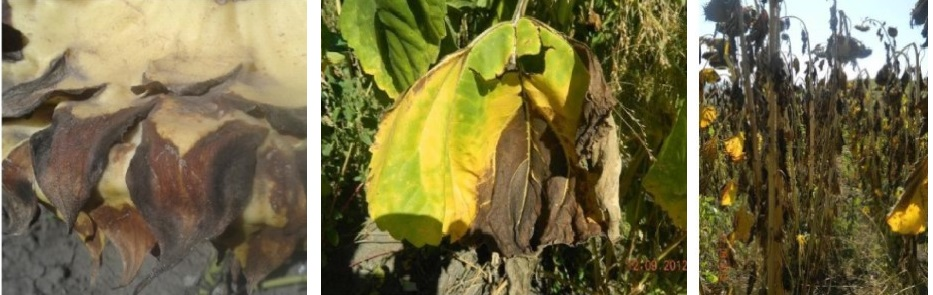

ФОМОПСИС ПОДСОЛНЕЧНИКА
Фомопсис является опасным карантинным заболеванием подсолнечника. В случае заражения у этой культуры происходит резкое снижение урожайности.
Данное заболевание является грибковым (его возбудитель относится к классу несовершенных грибов) и широко распространено в странах, где выращивание подсолнечника поставлено на промышленную основу.
Развитие болезни зависит от множества факторов, среди которых восприимчивость сорта или гибрида к заражению, возраст растений, степень поражения, а также климатические и погодные условия.
Симптомы и жизненный цикл возбудителя болезни. Фомопсис поражает все надземные органы в процессе роста и развития растений. На листьях появляются разнообразные по форме коричневые или тёмные пятна. Гриб распространяется по сосудистой системе растений, что приводит к разрушению стебля, который легко ломается. Гриб образует коричнево-серые или чёрные пикниды шарообразной формы, размером 180— 270 мкм в диаметре. В пикнидах формируются одноклеточные, бесцветные, удлинённые споры величиной 21— 27 X 1,2 мкм.
Распространение и вредоносность. Распространено заболевание почти во всех районах возделывания подсолнечника. В результате заражения фомопсисом потери урожая подсолнечника могут достигать свыше 50%. При этом значительно (до 40%) уменьшается процент выхода масла, снижаются качественные характеристики продукта, а семена зараженных растений имеют низкую всхожесть.
Источник инфекции. Сохраняются на семенах и растительных остатках. Там же образуются перитеции, вызывающие следующей весной новое заражение аскоспорами.
Статистика. Общая площадь, с выявленными очагами распространения фомопсиса, составила 176 450 Га в 2015 году и 175 552 Га в 2016. Площадь сократилась на 898 Га, за счет сокращения площади заражения в Краснодарском крае на 858 Га и в Белгородской области на 40 Га. Всего в России в расматриваемые периоды фомопсис был зафиксирован в десяти регионах, из которых самые большие очаги в Ростовской и Воронежской областях, а также в Ставропольском крае.
Рис.1 Площадь заражения фомопсисом территорий регионов, в гектарах (сравнение данных 2015 и 2016 годов).
Рис.2 Распределение по регионам от общей площади заражения фомопсисом (сравнение данных 2015 и 2016 годов).
Copyright ©